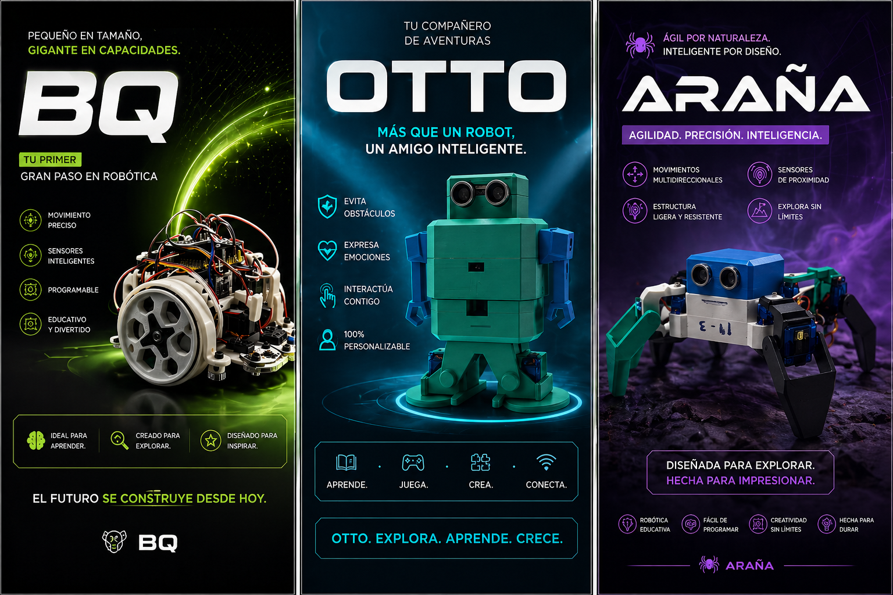
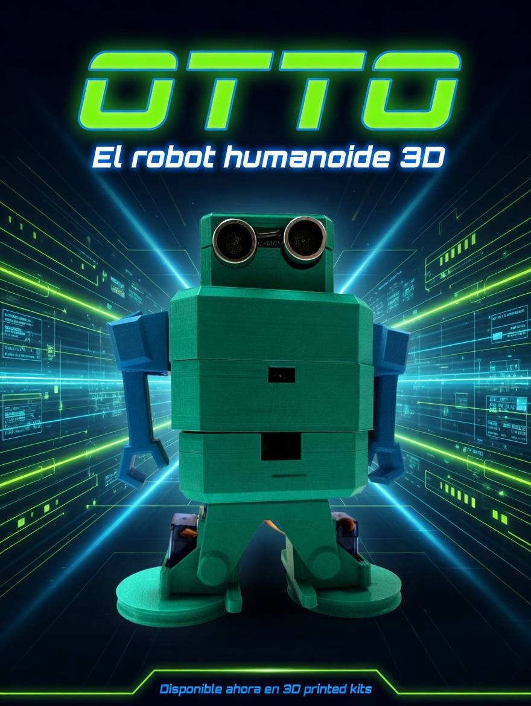
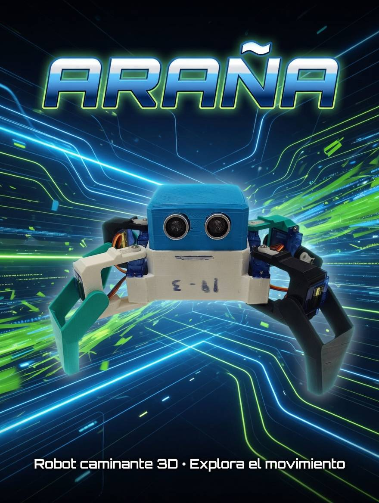
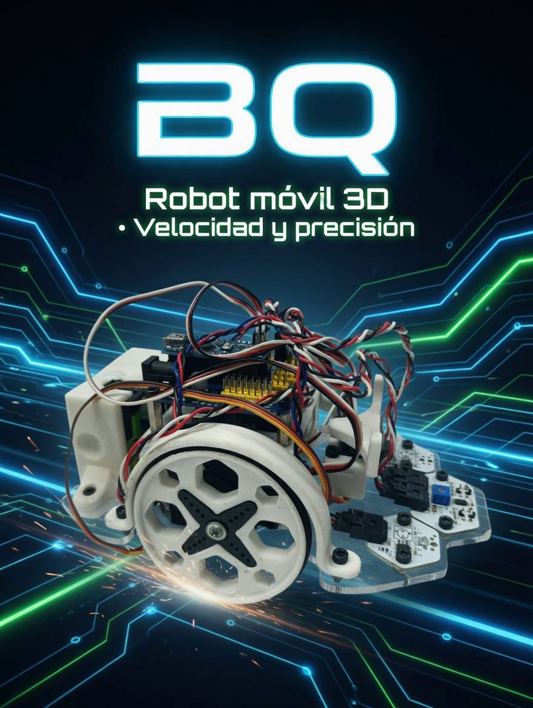

🌈Ongi etorri etorkizunera Arelux Robotikarekin!🌈
Arelux Robotikan, teknologia konbentzionaletik haratago eramaten dugu. Ez dugu robotak bakarrik sortzen... Irtenbide adimendunak diseinatzen ditugu, lan egiteko, ikasteko eta hazteko modua eraldatzen dutenak. Irudimenaren eta teknologia aurreratuaren arteko zubia gara, industriak, hezkuntza eta etorkizunerako ekintzailetzak bultzatzen dituzten irtenbide robotikoak garatuz.
- Automatizazio adimenduna: kostuak murrizten, eraginkortasuna handitzen eta giza akatsak ezabatzen dituzten sistema robotikoekin prozesu industrialak eta enpresarialak optimizatzen ditu.
- Hezkuntza eta enpresa robotak: Etorkizuna menderatu nahi duten eskola, akademia eta ikasleentzat diseinatutako programak: programazioa, elektronika eta pentsamendu logikoa zerotik aurreraino.
- Neurrira egindako soluzio teknologikoak: Robot pertsonalizatuak sortzen ditugu zure enpresaren beharren arabera: beso robotikoetatik sistema autonomoetaraino.
- Zure hazkundea bultzatzen duen berrikuntza: Zure sistemak IA, IoT eta machine learning-ekin konektatzen ditugu zure negozioa hurrengo mailara eramateko.
- Aholkularitza eta Garapena: Ideiatik hasi eta ezarpeneraino lagunduko dizugu, emaitza erreal eta neurgarriak ziurtatuz.
Zergatik aukeratu Arelux?
- Etengabeko berrikuntza
- Diseinu modernoa eta funtzionala
- Teknologia fidagarria
- Ikuspegi sortzailea eta estrategikoa
💡 Ikuspegi estrategikoa
Proiektu bakoitza errotik aztertzen dugu, benetan arazoak konponduko dituzten soluzio robotikoak diseinatzeko, ez bakarrik "ondo ikustea".
🤝 Erabateko laguntza
Hasierako ideiatik etengabeko inplementazio eta mantentzeraino.
🥀ARELUX ROBOTIKA BAINO GEHIAGO DA
Sormena, berrikuntza eta teknologia dira, eta elkarrekin lan egiten dute desberdintasuna markatzen duten irtenbide adimendunak eraikitzeko.
Teknologia sormenez, zehaztasunez eta estiloz. Etorkizuna ez delako espero... Eraikitzen ari da!
- Eman hurrengo urratsa Arelux Robotikarekin 🌸
Tiktok: arelux.robotica

DOKUMENTAZIOA
Robotak muntatuz hasi dugu proiektua, armiarma eta Otto robota, hain zuzen ere. Zati hori garrantzitsua da, horrela hobeto ulertzen baitugu nola funtzionatzen duten eta nola eginda dauden. Piezak ezagutzeko eta tresnak erabiltzen ikasteko ere balio izan digu.
Fase honetan, robot bakoitzaren pieza, erreminta eta egiturekin ohitzeko aukera izan dugu, nola diseinatuta dauden eta oinarrizko mailan nola funtzionatzen duten ulertzen hasteaz gain.
Otto robotarekin: hainbat arazo izan ditugu. Arazo nagusia piezak falta direla da, eta, beraz, ezin izan dugu muntatu. Horrek eragotzi egin digu muntaketan ondo aurrera egitea. Gainera, pieza batzuk ez zeuden behar bezala ahokatuta, eta horrek denbora galtzea eragin digu, ondo kokatzeko ahaleginean. Laburbilduz, arazorik handiena piezak falta direla izan da. Berriro desmuntatu behar izan dugu motorrak egiaztatzeko eta 360koak gurpilen aldean jartzeko.

Armiarmarekin: ez dugu hainbeste arazo izan, pieza guztiak genituelako. Hala ere, muntaketa ez da erraza izan. Zati batzuek ahokatzeko pixka bat balio dute, eta torlojuak beren lekuan jartzea zaila da. Kontuz eta pazientziaz egin behar izan dugu, huts ez egiteko. Motorrak 180 edo 360koak diren ikusteko, berriro desmuntatu eta muntatu behar izan dugu. Horren ondoren, hankak mugiaraziz programatu dugu, eta koordinatu egin behar dira, asko kostatuko baita. Hanka bat mugitzen saiatu garenean apurtu egin zaigu, eta beste bat bilatu eta berriro jarri behar izan dugu; zorionez, talderen batean soberan zegoen.

BQ: garrailineak kodearekin hasi gara, baina hainbat arazo izan ditugu: Portuek ez digute funtzionatzen eta kodean ere akatsak izan dira.

Enpresaren logoa:
Gero, WIFIa konfiguratzen hasi gara, eta, horretarako, lehenik eta behin, berrasieratu egin behar izan dugu, ez baitzuen aurreko konfiguraziora behar bezala sartzeko aukerarik ematen. Ondoren, routerraren administrazio-panelean sartuko gara, sarearen izena aldatzeko eta pasahitz seguruagoa ezartzeko, WPA2 zifratua erabiliz. IP konexio automatikoa ere konfiguratzen dugu gailuak arazorik gabe konektatu ahal izateko, eta seinalea ekipo guztietara behar bezala iritsiko dela egiaztatzen dugu.
DProzesuan hainbat akats izan genituen, hala nola gailu batzuk konektatzeko arazoak, pasahitza gaizki idatzita zegoelako eta sarea erabilgarri ez zegoen uneak. Gainera, kableatua berrikusi behar izan genuen, eta routerra behin baino gehiagotan berrabiarazi, konfigurazioa behar bezala gordetzeko. Azkenik, sareak modu egonkor eta seguruan funtzionatzea lortu genuen, gailu guztiek Interneterako sarbidea behar bezala zutela egiaztatuz.